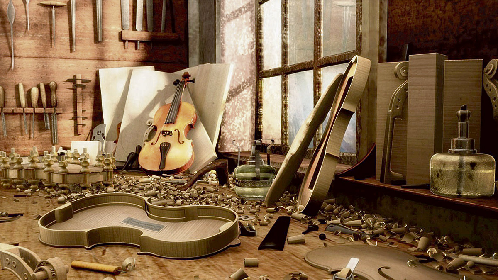

Servicios
Con el paso de los años, el uso excesivo, una caída desafortunada o cualquier otro factor, pueden implicar la necesidad de tener que pasar por el taller y solicitar una reparación del instrumento musical o una puesta a punto. Como bien saben nuestros clientes, en Symphony Avenue no solo nos dedicamos a la venta de productos musicales, si no también a la reparación de instrumentos musicales. Pueden ser muchas las causas por las que necesites reparar tu instrumento de música: reconstrucción de piezas, problemas de afinación, limpieza a fondo, golpes o abolladuras en el metal del instrumento, grietas, reparar el barniz de tu guitarra, restaurar violín, cambiar las cuerdas de la guitarra… y muchos otros motivos. Dicho esto… ¿Qué servicios podemos ofrecerte en el taller de instrumentos musicales de Symphony Avenue?
Reparaciónde guitarrasRealizamos cualquier tipo de restauración y reparación de guitarra(reparar guitarra española, reparación guitarras eléctricas, acústicas, bajos, banjos…) sea cual sea el problema o el requerimiento: arreglar una guitarra, cambiar cuerdas de guitarra, reparar grieta en guitarra española, reparar golpes guitarra española, reparar barniz guitarra clásica, reparar golpe guitarra eléctrica, reparar mastil guitarra electrica, puesta a punto, etc.

Luthería
Además de las reparaciones de guitarra, ofrecemos también servicios de luthería del resto de instrumentos de cuerda frotada y percutida. Con especialistas en restaurar o reparar violín, cello, contrabajo, arpa, viola, violoncello, etc. afinación mantenimiento de instrumentos musicales Reparación de instrumentos musicales de viento También somos especialistas en reparación de instrumentos musicales de viento, ya bien sea una reparación de instrumentos de viento metal (reparación de trompeta, fliscorno, bombardino, corneta, trompa, trombón o tuba) como una reparación de instrumentos de viento madera: reparación de saxofón, reparación de flauta travesera, reparar trompeta, oboe, fagot, flautín… Espero que este post te ayude a mantener tu instrumento musical en las mejores condiciones durante muchos años. No obstante, si tu instrumento musical ha sufrido algún accidente, golpe o crees que necesita alguna revisión, ponte en contacto con nosotros, para que podamos ayudarte a dejarlo como nuevo otra vez. ¡Hasta pronto!
